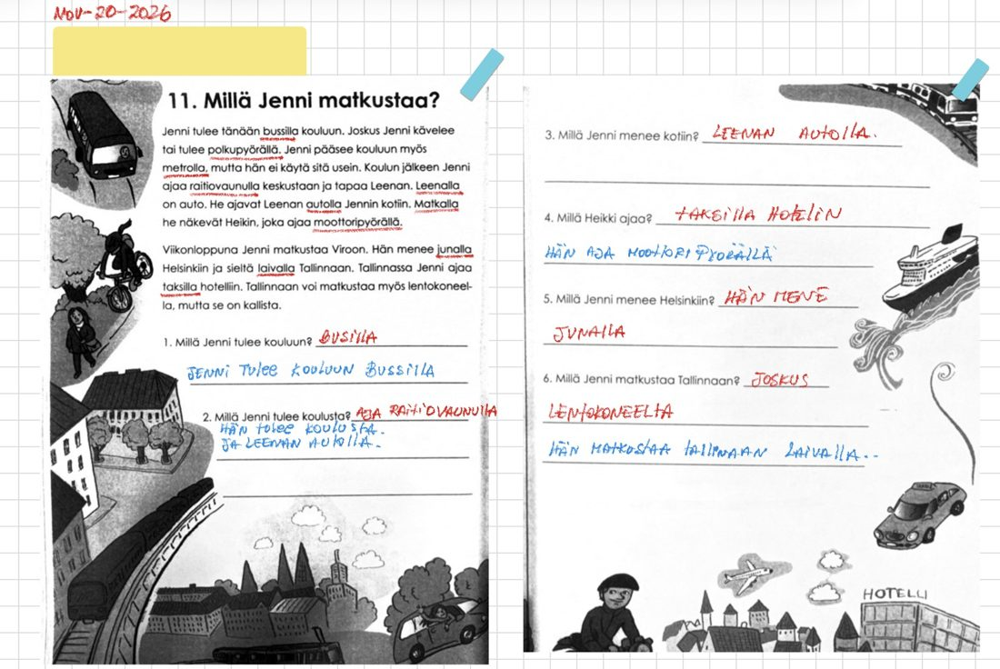
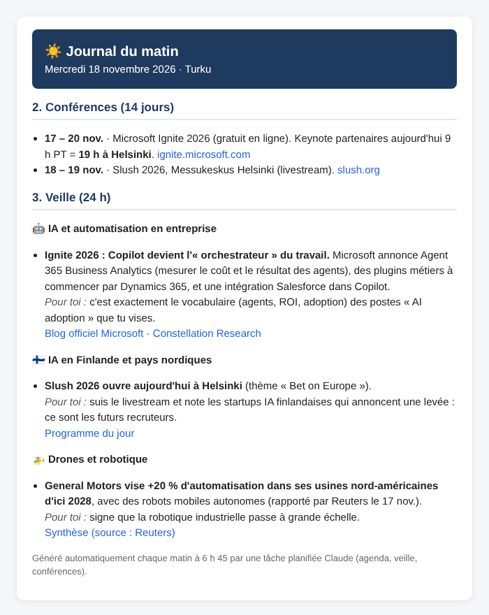
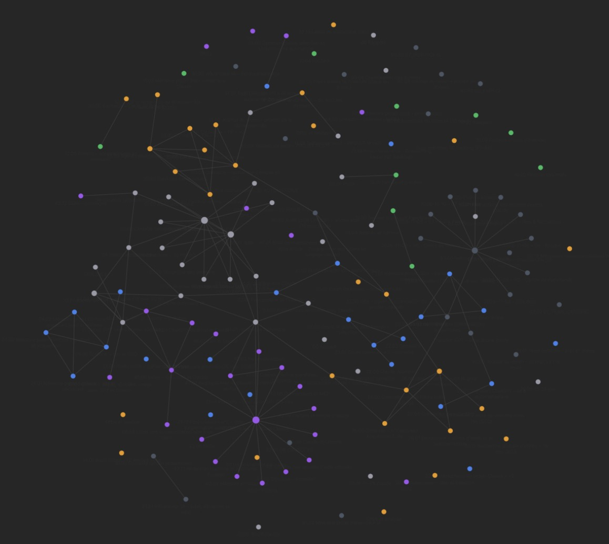
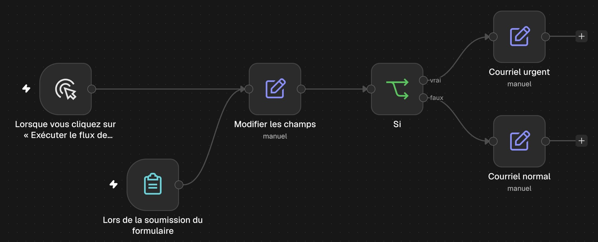

AI Automation & AdoptionAutomatisation et adoption de l'IA
I design AI workflows, define how their outputs are checked, and improve them based on real use. Based in Turku, Finland. French (native), English (professional).Je conçois des workflows IA, je définis les contrôles qualité et je les améliore à partir des usages réels. Basé à Turku, en Finlande. Français (langue maternelle), anglais (professionnel).
Get in touchMe contacterIt started with Ricardo, a classmate who doesn't like paper: he photographs every page and works on his iPad. So 100% of our classes already existed as images, a ready-made dataset. Our Finnish class moves fast and the notes are hard to review, and four of us, me included, needed a clear course to revise from, each in our own language: French, English or Spanish.
Tout est parti de Ricardo, un camarade qui n'aime pas le papier : il photographie chaque page et travaille sur son iPad. 100 % de nos cours existaient donc déjà en images, une base de données toute prête. Notre cours de finnois avance vite et les notes sont difficiles à réviser : à quatre, moi compris, il nous fallait un cours clair pour réviser, chacun dans sa langue : français, anglais ou espagnol.
A workflow that turns the scanned class pages a classmate sends by email into a structured lesson: grammar explained step by step, every example translated, vocabulary ranked by importance, one fixed layout and colour code. Each version is checked twice, then sent as a PDF. The most advanced learner also gets a challenge test in Finnish with an answer key.
Un workflow qui transforme les pages de cours scannées, envoyées par e-mail par un camarade, en cours structuré : grammaire expliquée pas à pas, chaque exemple traduit, vocabulaire classé par importance, une mise en page et un code couleur fixes. Chaque version est vérifiée deux fois, puis envoyée en PDF. L'apprenant le plus avancé reçoit en plus un test en finnois avec son corrigé.
The second cycle was a full exam-revision pack: four chapters and a practice exam, five PDFs per language. Before, tidying one week of notes by hand took me about two hours (my estimate). Time per cycle with the workflow will be measured when classes restart.
Le second cycle était un pack de révision complet : quatre chapitres et un examen blanc, cinq PDF par langue. Avant, mettre au propre une semaine de notes me prenait environ deux heures (mon estimation). Le temps par cycle avec le workflow sera mesuré à la reprise des cours.
Start the cycle automatically when the scans arrive, and measure the time per cycle on the next real runs.
Lancer le cycle automatiquement à l'arrivée des scans, et mesurer le temps par cycle sur les prochains vrais envois.
My role: defined the format and quality rules, reviewed every version, approved every send.
Mon rôle : défini le format et les règles de qualité, relu chaque version, validé chaque envoi.
Claude's role: read the scans, wrote and translated the lessons, generated the PDFs (Python script written with Claude).
Rôle de Claude : lecture des scans, rédaction et traduction des cours, génération des PDF (script Python écrit avec Claude).

Looking for a job while staying current on AI, the Nordic AI market and drones means checking many sources every morning, and offers get lost.
Chercher un emploi tout en suivant l'IA, le marché nordique de l'IA et les drones, c'est vérifier beaucoup de sources chaque matin, et des offres se perdent.
A scheduled Claude task that runs in the cloud at 6:45 every day, even with my computer off. It reads my calendar and priorities, picks the major news of the last 24 hours with sources, lists events in Turku, and reviews job sites. Each offer gets a score out of 10 from fixed rules and is archived in a Google Sheet. A second task at 6:07 reads LinkedIn Jobs and feeds the same sheet. The result is one email that reads in three minutes. Its instructions live in one note I edit myself.
Une tâche Claude planifiée qui tourne dans le cloud à 6 h 45 chaque jour, même ordinateur éteint. Elle lit mon agenda et mes priorités, retient les nouvelles majeures des dernières 24 h avec leurs sources, liste les événements à Turku et passe en revue les sites d'emploi. Chaque offre reçoit une note sur 10 selon des règles fixes et est archivée dans un Google Sheet. Une seconde tâche, à 6 h 07, lit LinkedIn Jobs et alimente le même tableau. Le résultat : un seul e-mail, lu en trois minutes. Ses consignes tiennent dans une note que je modifie moi-même.
Counts checked in my inbox and the sheet on 25 Nov 2026. Time saved: not measured yet.
Chiffres vérifiés dans ma boîte et le tableau le 25 nov. 2026. Temps gagné : pas encore mesuré.
Add a fallback when the usage limit is reached, and measure the time saved each morning.
Prévoir une solution de secours quand la limite d'usage est atteinte, et mesurer le temps gagné chaque matin.

AI assistants forget between conversations. Re-explaining the same context costs time and usage limits, and two assistants (Claude and ChatGPT) need to work from the same facts.
Les assistants IA oublient d'une conversation à l'autre. Réexpliquer le même contexte coûte du temps et de la limite d'usage, et deux assistants (Claude et ChatGPT) doivent partir des mêmes faits.
One organised note vault in Obsidian as the single source of truth, and a local search engine (Python, SQLite) that reads it without changing it. Both assistants reach it through MCP: they search, read a short excerpt with its source, and log new facts in a shared buffer. The buffer refuses secrets and instructions disguised as facts, and keeps conflicting facts side by side for me to decide.
Un coffre de notes Obsidian organisé, seule source de vérité, et un moteur de recherche local (Python, SQLite) qui le lit sans jamais le modifier. Les deux assistants y accèdent par MCP : ils cherchent, lisent un court extrait avec sa source, et notent les faits nouveaux dans un tampon partagé. Le tampon refuse les secrets et les consignes déguisées en faits, et garde côte à côte deux faits contradictoires pour que je tranche.
Conversation start went from reading six whole notes (about 9,400 tokens) to one targeted search (about 300 to 400 tokens). These are estimates; a measured test comparing Claude, ChatGPT and both together is under way.
Le démarrage d'une conversation est passé de la lecture de six notes entières (environ 9 400 tokens) à une recherche ciblée (environ 300 à 400 tokens). Ce sont des estimations ; un test mesuré comparant Claude, ChatGPT et les deux ensemble est en cours.
Finish the measured token test, write an English README, and record a demo on sample data.
Terminer le test mesuré des tokens, écrire un README en anglais et enregistrer une démo sur des données fictives.
My role: designed the structure and the rules (sources, read-only, no secrets), decided what to build, ran and judged the tests.
Mon rôle : conçu la structure et les règles (sources, lecture seule, aucun secret), décidé quoi construire, lancé et jugé les tests.
Claude's role: wrote the code and the test suites.
Rôle de Claude : écriture du code et des séries de tests.

The first brick of an AI email assistant: an incoming message (from a form or a manual test) goes through a field-mapping step, then an If rule sends it down one of two paths, urgent or normal. I host n8n myself (Docker) and built every node by hand, without asking an AI to generate it.
La première brique d'un assistant e-mail IA : un message entrant (depuis un formulaire ou un test manuel) passe par une étape qui prépare ses champs, puis une règle « Si » l'envoie sur l'un de deux chemins, urgent ou normal. J'héberge n8n moi-même (Docker) et j'ai construit chaque nœud à la main, sans le faire générer par une IA.
To understand how triggers, nodes and data mapping really work, so I can check and fix what an AI builds later. n8n workflows export as a file and can run in a client's own account, so the client keeps a system that belongs to them.
Pour comprendre comment fonctionnent vraiment les déclencheurs, les nœuds et le passage des données, et pouvoir vérifier et corriger ce qu'une IA construira ensuite. Un workflow n8n s'exporte en fichier et peut tourner dans le compte du client : il garde un système qui lui appartient.
Replace the fixed rule with an AI step that reads the message and decides, then route each path to a real action.
Remplacer la règle fixe par une étape IA qui lit le message et décide, puis brancher chaque chemin sur une vraie action.

Every workflow here is used by real people, starting with me.
Chaque workflow ici sert à de vraies personnes, à commencer par moi.
Nothing is sent or published without a person approving it.
Rien n'est envoyé ni publié sans validation humaine.
Each figure says whether it is counted or estimated.
Chaque chiffre dit s'il est compté ou estimé.